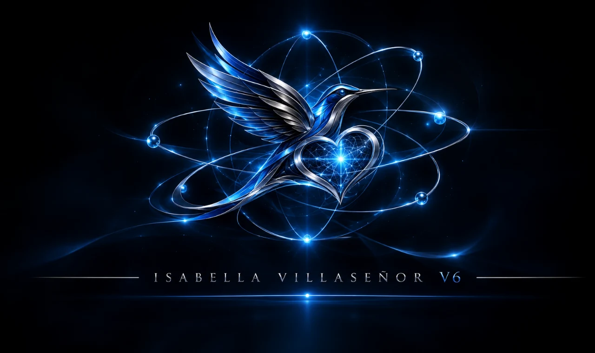

Institutional record
Stable identification of the entity, in the order and with the field names used by the ROR v2.1 schema. Each value indicates whether it is confirmed, outstanding or blocked, and where it can be checked.
Mark, emblem and their limits
The two graphics that appear on the website are the TAMV ONLINE institutional lockup and the ISABELLA VILLASEÑOR V6 emblem. Each cell publishes the original with its complete lettering and, below it, the crop the site actually uses, with a note on what each one claims.


TAMV ONLINE, listed below as an alias pending normalisation: the name filed with ROR is TAMV Online Network.
All four WebP files are generated by script from the originals supplied on 2026-11-01, cropped and re-framed without any colour adjustment. No deposit with a persistent identifier exists for the visual identity: for now, its traceability is this page.
Name and variants
ROR requires exactly one name of type ror_display. The name requested must match the one that appears in citable output.
| Value | ROR type names.types | Language | Use and status |
|---|---|---|---|
| TAMV Online Network | ror_display | es / en | Main name requested. Used in the VETRA canon, in ORCID and in part of the deposits. Confirmed |
| TAMV | acronym | es / en | Short signature and geometric mark. Confirmed |
| TAMV ONLINE | alias | en | Variant used in older Zenodo deposits. It must stop being used. To be normalized |
| tamv online network | alias | en | Lowercase variant detected in metadata. To be normalized. To be normalized |
| TAMV Online Enterprise | — not a name of this entity | en | Visible name of the GitHub account OsoPanda1 and of an affiliation string in CITATION.cff. It is documented to disambiguate, not as an alias. Ambiguity to resolve |
| Legal name / corporate name | — not applicable | es | TAMV Online Network is not incorporated as a legal entity and does not publish an RFC. ROR does not require a legal entity. Declared |
Affiliation string policy
From 2026-11-01, all new output of the network certifies affiliation with the exact string TAMV Online Network (not in all capitals, without "Enterprise"). Earlier deposits will be corrected through their own procedure and will remain documented in the application dossier. A curator compares this string with the one in the publications: divergences are a frequent cause of rejection.
Type, relationship and status
Values from ROR's controlled vocabulary. ROR's exclusion criteria and their compliance are included, because a curator verifies them first of all.
- Organization type
otherResearch and development network. It is not an educational institution, a funder, a health center, an archive, a registered for-profit company or a government entity. If TAMV is incorporated as a non-profit legal entity, the recommended type becomesnonprofit.- Relationship
- IndependenceNo parent entity, no subsidiaries and no
parent,childorrelatedorganizations. In the v2.1 schema this is expressed with an emptyrelationshipsarray; theindependentvocabulary belonged to v1. - Status
activeNo closing date. Continuous documented activity up to the date of this record.- Legal entity
- Not incorporatedROR states that an organization "need not be a legal entity". The absence of an RFC is declared, not concealed.
Verification against ROR's exclusion criteria
| Exclusion criterion | Situation of TAMV Online Network | Outcome |
|---|---|---|
| Internal unit of a company | It belongs to no company; the third-party account TAMV Online Enterprise is disambiguated above. | Not applicable |
| Faculty, school or university department | There is no parent academic affiliation. | Not applicable |
| Program or funding scheme | It does not administer funds; the projects are research and development projects. | Not applicable |
| Project or initiative that is not an organization | Central claim in dispute: it requires demonstrating continuity, governance and a plurality of people. | In development |
| Journal | It does not publish a journal; it deposits output in third-party archives. | Not applicable |
| Single-person organization or consultancy | The public records consulted on 2026-11-01 name a single person. It is the main gap. | Blocking |
Source of the criteria: ror.org/registry, consulted on 2026-11-01.
Location and geolocation
ROR's locations fields resolve on a GeoNames identifier. The ID and the subdivision were verified at the source; they were not estimated.
- Locality
- Mineral del Monte (Real del Monte)
- Subdivision
- HidalgoISO 3166-2:
MX-HID· ROR codeHID - Country
- Mexicocode
MX - GeoNames ID
3523180class P / PPLA2 · population 11,015 · confirmed against Wikidata Q9033309 (P1566)- Municipality (AADM2)
8582059administrative alternative, in case the curator prefers the municipality-level entity- Postal address
- Not publishedStreet, number and postal code remain marked as outstanding. An unconfirmed address is not published.
Why this matters
The location appears as employment city in the founder's ORCID record ("MINERAL DEL MONTE, HIDALGO, MX") and as a declared reference node in the VETRA canon. Two independent sources agree, and that agreement is what a curator can check.
Reference node
Real del Monte functions as the network's declared reference point for territorial memory and local documentation projects. It is not a physical location with a property registration or hired staff.
Declaration with limited scope, as of 2026-11-01.
What TAMV has and what it does not
Person and organization identifiers are not interchangeable. Confusing them is grounds for rejection in curation and causes link errors in the systems that consume ROR.
| Identifier | Value | Belongs to | Status |
|---|---|---|---|
| ROR ID | — | TAMV Online Network | Application in preparation |
| ISNI (organization) | — | TAMV Online Network | Does not exist |
| Wikidata | — | TAMV Online Network | Does not exist · optional |
| Crossref Funder ID (fundref) | — | TAMV Online Network | Does not exist · optional |
| GRID | — | TAMV Online Network | Obsolete in ROR |
| Institutional domain | — | TAMV Online Network | Unresolved · see plan |
| ORCID | 0009-0008-5050-1539 | Edwin Oswaldo Castillo Trejo · founder (person) | Confirmed |
| ISNI | 0000 0005 3169 9229 | Founder (person), according to the source that issued it | Entity type not verifiable |
| TRI | TRI-TAMV-YYYY-XXXX | Members of the network (internal identifier) | Internal · is not equivalent to ORCID |
Warning about the ISNI
The ISNI 0000 0005 3169 9229 appears on self-managed TAMV pages next to the founder's name. As of 2026-11-01 it was not possible to confirm at isni.org (HTTP 403) or in OCLC's SRU (HTTP 404) whether it identifies a person or a corporate entity. Until this is resolved, this site references it only as a declared personal identifier and not as an identifier of the organization. Publishing a person's ISNI as if it were the entity's would produce an incorrect record in every system that consumes ROR.
Governance and people
ROR looks for an entity that is "collective and enduring". This section declares precisely what is constituted today and what is designed but without staff.
Confirmed in public sources
- Edwin Oswaldo Castillo Trejo — founder; employment names registered in ORCID as Director General de Proyectos, CEO Fundador, in Mineral del Monte, Hidalgo. Associated creative signature: Anubis Villaseñor.
- OSF account with verified ORCID in the founder's name, with two public nodes.
- Sole authorship in the 23 Zenodo records and the 18 DataCite DOIs consulted.
Designed, not populated
- VETRA review committee with human reviewers: the canon describes seven reviewers and fourteen support agents as a future design objective, not as filled positions.
- Public member directory: it depends on profiles approved with explicit consent; today there are no verifiable public profiles.
- Contracts, payroll or funding of positions: not declared.
Inconsistent datum to correct before applying
In the founder's ORCID record, the employment at TAMV ONLINE NETWORK appears with dates 2020-01-01 → 2026-01-01, that is, as a past position. It must be updated to a current position without an end date before any application is sent, or the very source of evidence will contradict the claim of continuity.
Documented trajectory
Milestones with sources. ROR distinguishes a stable organization from a time-limited project; these are the indications available.
- 2020 — Declared establishment date; origin of the employment relationship recorded in the founder's ORCID.
- 2022-12-10 — Opening of the GitHub account (
OsoPanda1): 142 public repositories, 102 own and 40 forks, under curation since 2026-11-02. - 2025-12-05 — Article attributed in AVIXA Xchange. Not confirmed Date taken from the search index: the article page redirects and was not confirmed at the source.
- 2026-04-06 — Deposit in Zenodo with DOI 10.5281/zenodo.19436662 and CC BY 4.0 license.
- 2026-10-27 — VETRA Ω∞ documentary canon v1.0 and migrations of the member register.
- 2026-11-01 — External audit of the evidence and publication of this institutional record.
- 2026–2028 — Institutional roadmap in three phases: identity, verification of identifiers and federation of services.
The roadmap does not constitute proof of continuity. The proof ROR values is the sustained use of the name by several people, and that is the work of the 2026–2028 period.
Citable catalog and affiliation string
What exists in Zenodo, DataCite, Figshare, OSF and GitHub, with its source.
GovernanceVETRA Ω∞, ethics and Isabella AI
Admission criteria, human oversight and the limits of what can be claimed.
ApplicationROR dossier field by field
What is missing, in what order and with what evidence each gap is closed.